Марс: пять миссий
Глава реализована в локальной игре: 4-1 → 4-2 → 4-3 → 4-4 → 4-5 → меню. Здесь собраны текущие правила, графика и подвижная сборка босса из полного пакета 29.09.2026.
Автоматические проверки заявлены в пакете; мы не запускали игру из этих выдержек. Тестовый пилот 4-2–4-5 был неуязвим: это проверка достижимости победы, а не окончательной сложности. Ручное прохождение и визуальная приёмка ещё нужны. APK всей главы в комплекте нет.
4-1 · Красная линия
Пройти транспортный пояс: четыре платформы, четыре механические руки и девять волн Mars Scout / Striker / Guard. Предупреждение длится 3 секунды, движение — 6; безопасный маршрут остаётся доступен.
Победа после прохода всех восьми механизмов, завершения очереди волн и зачистки. Один механизм учитывает столкновение только один раз. Щит или неуязвимость сохраняют корпус, но не отменяют контакт; урон от врагов учитывается отдельно.
Три звезды в текущей игре
- Пройти пояс
- Ни одного контакта с механизмами
- Без урона корпусу от механизмов
Звёзды выдаются только при победе. Числа HP, таймеры и дополнительные условия — текущая настройка для согласования, а не утверждённый числовой канон.
Производство работает на 310%; неизвестные приказы ведут к фабрике 4-2. Живая сборка и восстановление врагов здесь ещё не вводятся.
Сцены и реплики → · Подробная записка реализации

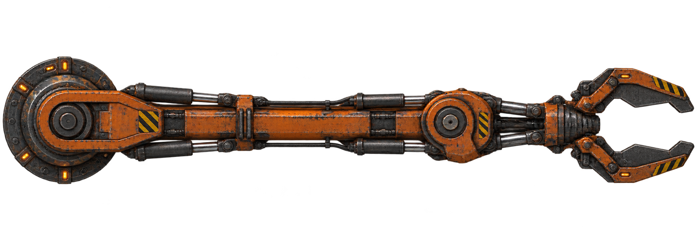
Оригинал PNG · Версия в игре


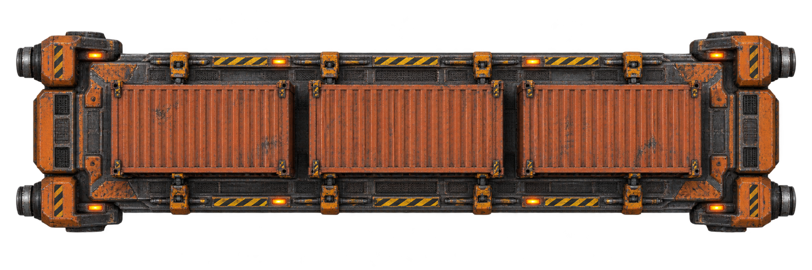
Оригинал PNG · Версия в игре

Кадры автоматических проверок
Это кадры тестов, не запись обычного прохождения. Таймеры и реплики могли переключаться тестом.

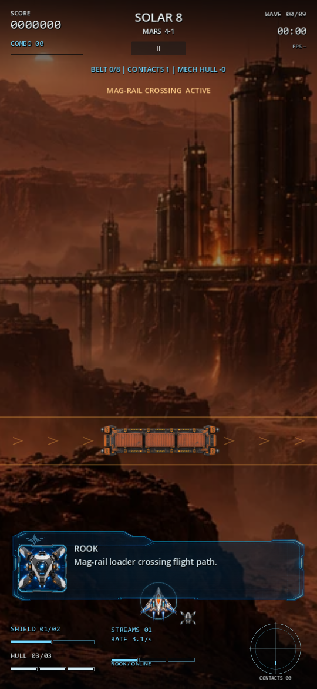

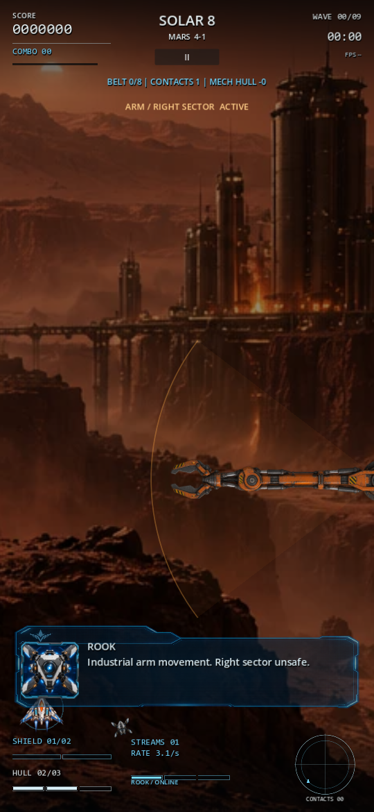
4-2 · Фабрика без смены
Уничтожить три стапеля и зачистить сектор. Стапели собирают врагов на экране; Mars Repair Unit может вернуть тяжёлую машину в бой. Уничтожение ремонтного аппарата прерывает восстановление.
Текущая настройка: стапель — 24 HP, цикл сборки — 10 секунд, до семи защитников. Обломок существует 12 секунд, ремонт занимает 6 секунд после прибытия. Каждая тяжёлая машина возрождается один раз и не даёт повторных очков.
Три звезды в текущей игре
- Остановить стапели и зачистить сектор
- Ни одного восстановления врага
- Без урона корпусу
Звёзды выдаются только при победе. Числа HP, таймеры и дополнительные условия — текущая настройка для согласования, а не утверждённый числовой канон.
Макс и Лена находят незнакомые компоненты. После финала открывается реализованная миссия 4-3; раскрытие NOVA остаётся там.
Сцены и реплики → · Подробная записка реализации

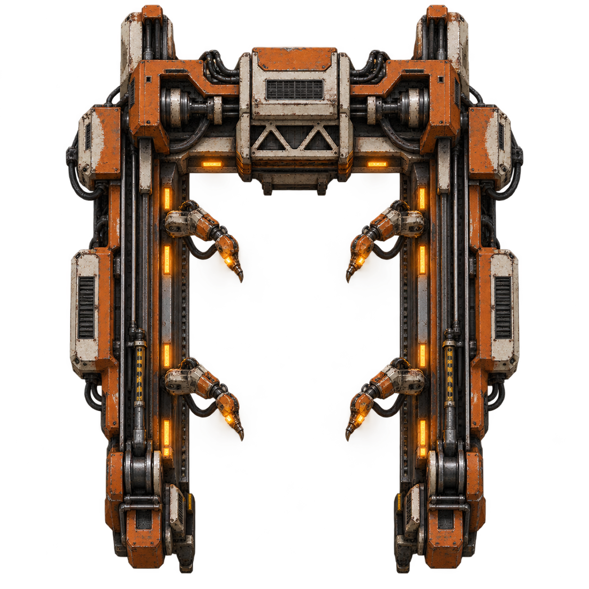
Оригинал PNG · Версия в игре


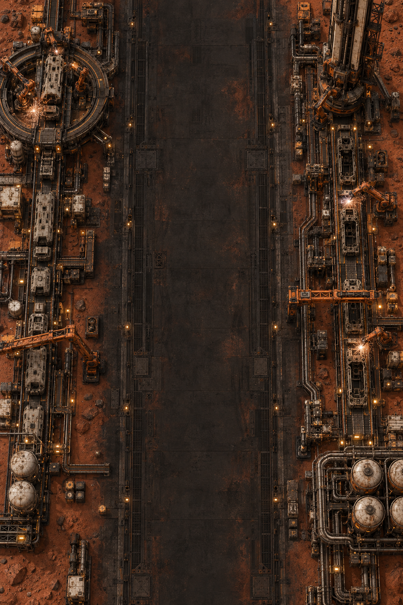
Оригинал PNG · Версия в игре

Кадры автоматических проверок
Это кадры тестов, не запись обычного прохождения. Таймеры и реплики могли переключаться тестом.

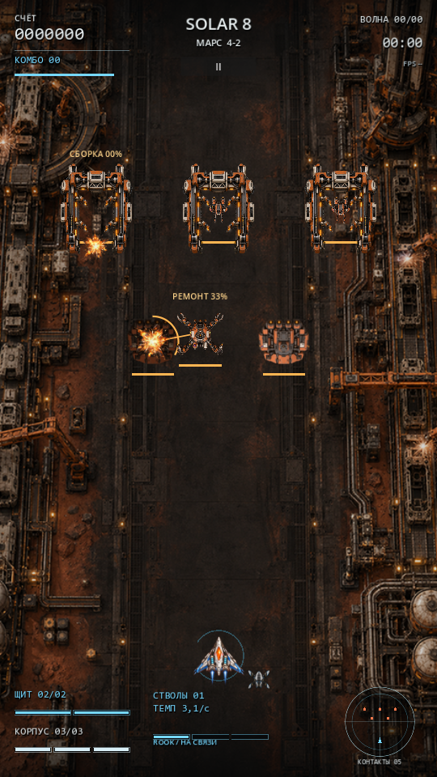
4-3 · NOVA
Защитить три узла памяти, пока ROOK читает NOVA через изолированный сервисный интерфейс. У интерфейса нет доступа к управлению кораблём. Огонь игрока не повреждает узлы; потеря любого узла означает поражение.
Текущая настройка: 10 HP на узел, вступление 24 секунды, 60 секунд активного чтения, пауза 4 секунды каждые 22 секунды. Девять пар атакующих с интервалом 8 секунд. Для завершения ROOK должен вернуться, а оставшиеся враги — быть уничтожены.
Три звезды в текущей игре
- Сохранить изолированный фрагмент
- Ни одного повреждения узлов
- Без урона корпусу
Звёзды выдаются только при победе. Числа HP, таймеры и дополнительные условия — текущая настройка для согласования, а не утверждённый числовой канон.
Макс сохраняет небольшой чистый фрагмент личности. NOVA не исцелена целиком; фрагмент остаётся в отдельном хранилище. Следующая миссия — 4-4.
Сцены и реплики → · Подробная записка реализации

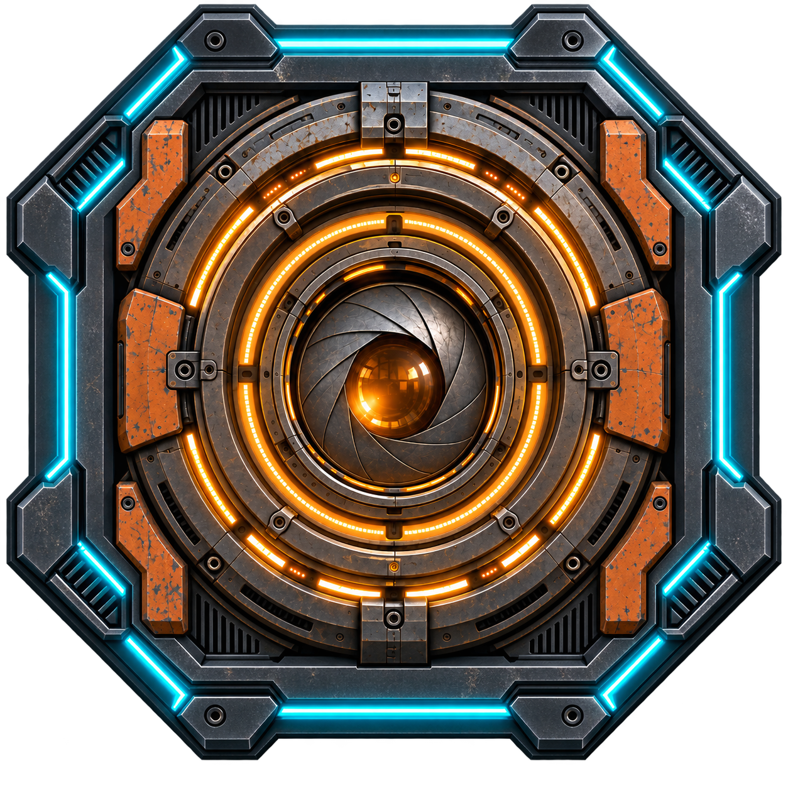
Оригинал PNG · Версия в игре


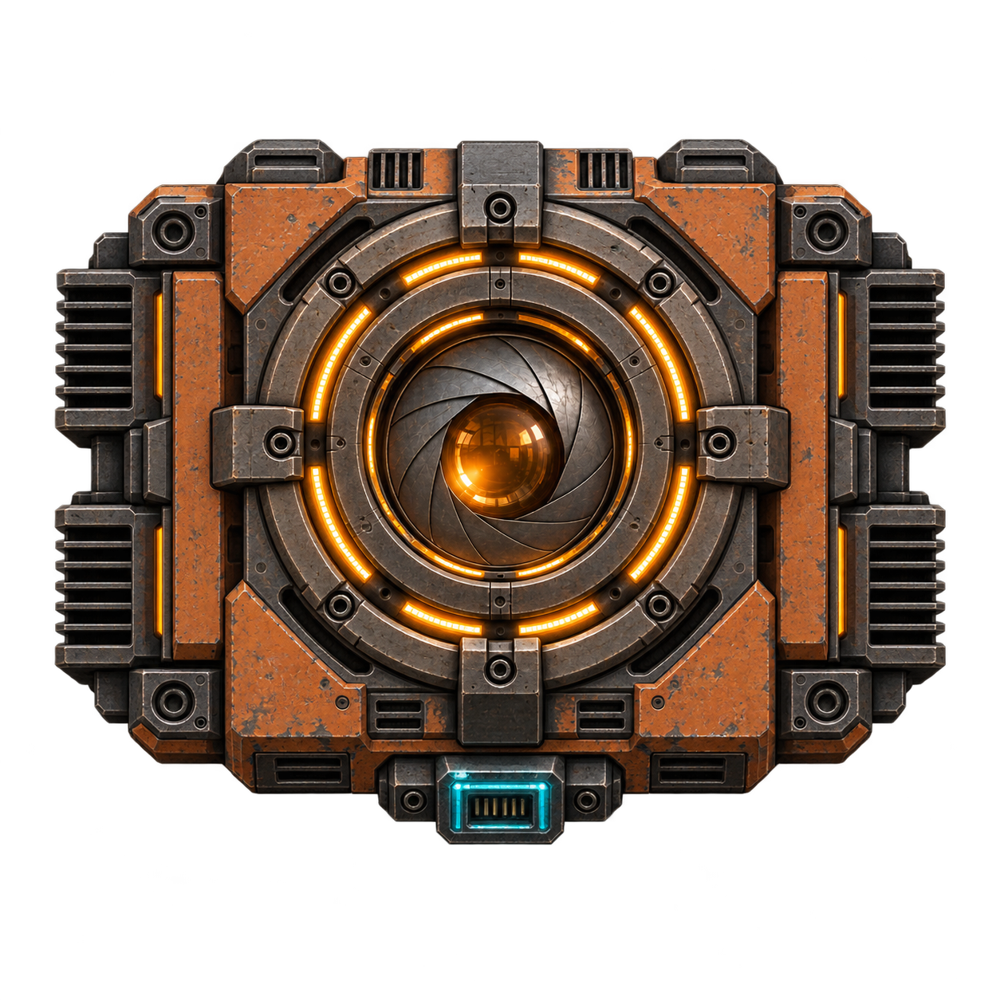
Оригинал PNG · Версия в игре


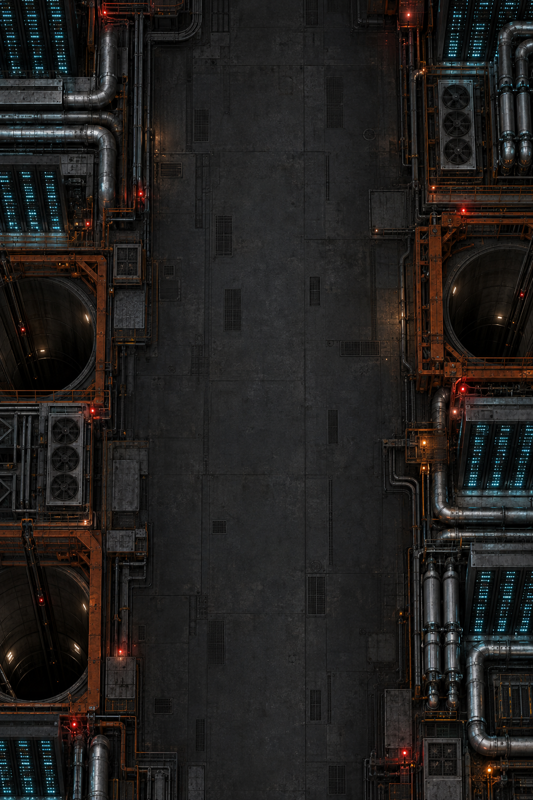
Оригинал PNG · Версия в игре

Кадры автоматических проверок
Это кадры тестов, не запись обычного прохождения. Таймеры и реплики могли переключаться тестом.

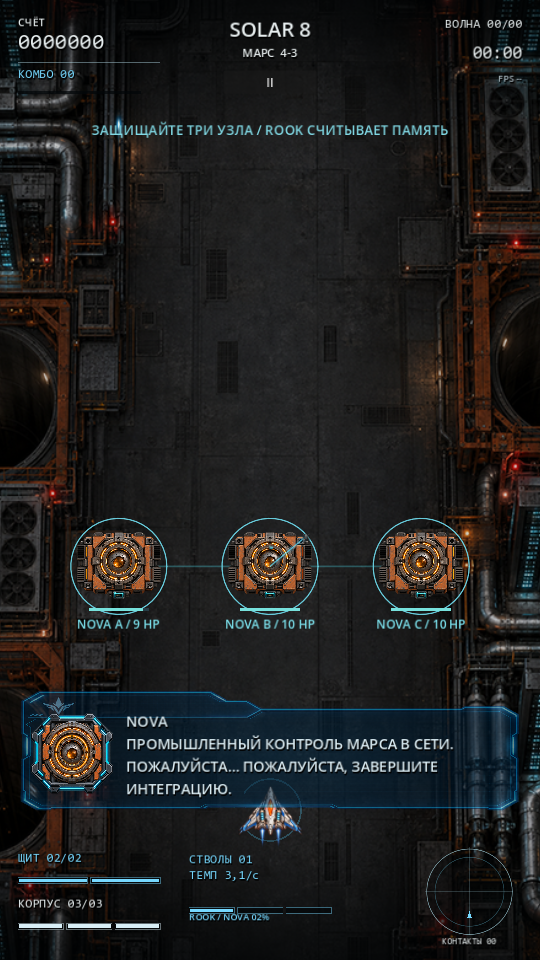
4-4 · Чужой шаблон
Последовательно просканировать три образца A → B → C и сохранить все до конца. ROOK физически перемещается между ними и читает только в рабочей зоне. Огонь игрока безопасен для образцов; враг может уничтожить даже уже просканированный образец и вызвать поражение.
Текущая настройка: 10 HP на образец, вступление 12 секунд, по 22 секунды активного сканирования. Волна каждые 10 секунд: один, затем два и три противника. После третьего скана новые волны прекращаются; победа ждёт стыковки ROOK и зачистки.
Три звезды в текущей игре
- Просканировать и сохранить все образцы
- Ни одного повреждения образцов
- Без урона корпусу
Звёзды выдаются только при победе. Числа HP, таймеры и дополнительные условия — текущая настройка для согласования, а не утверждённый числовой канон.
Получен первый полный блок чужого кода. Вейл ограничивает доступ; глава продолжается боем с Assembler Prime в 4-5.
Сцены и реплики → · Подробная записка реализации

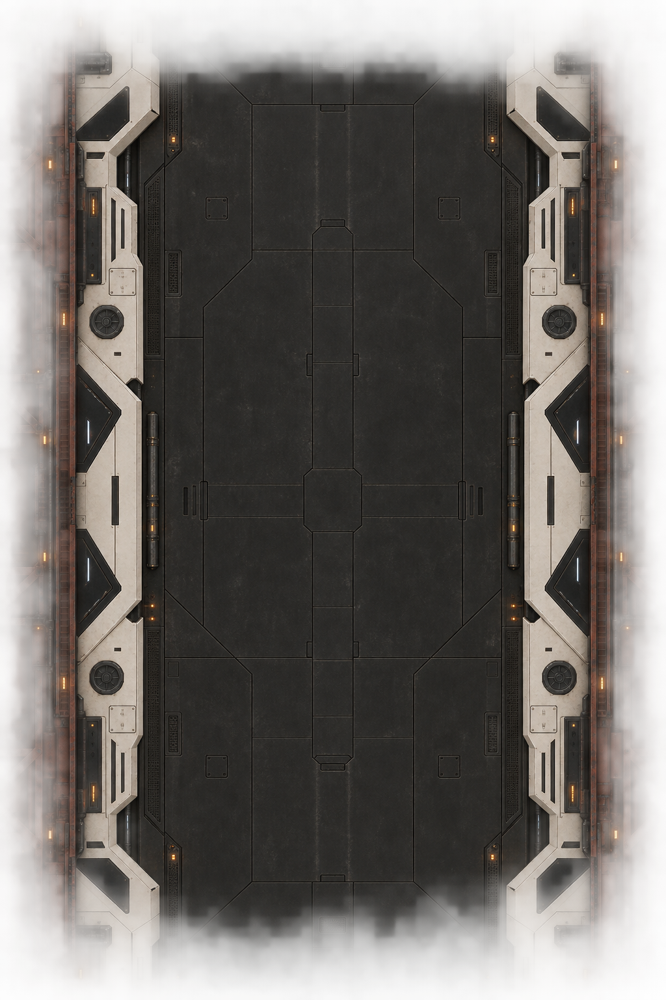
Оригинал PNG · Версия в игре


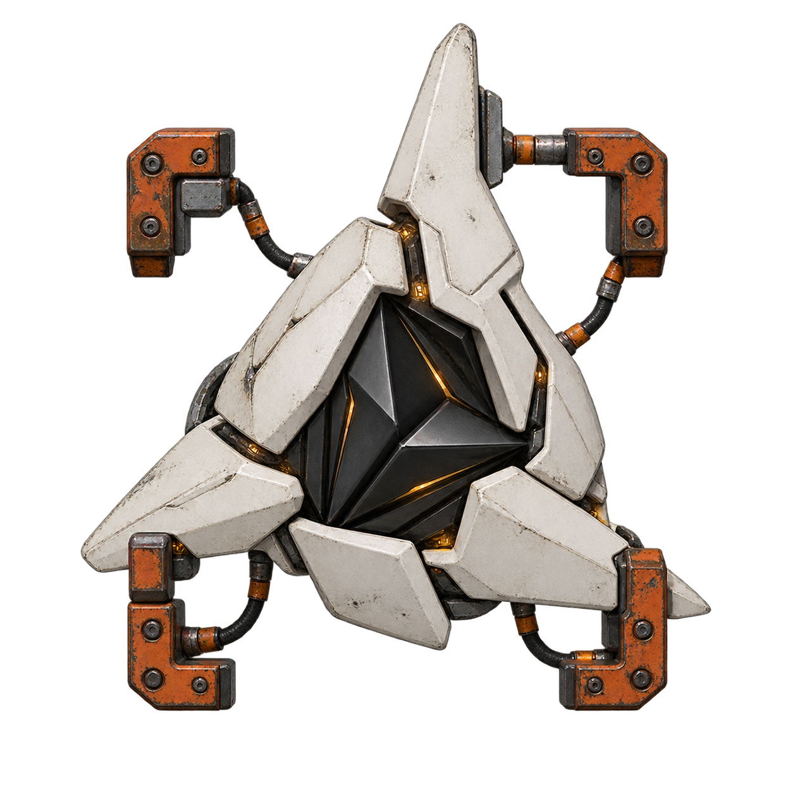
Оригинал PNG · Версия в игре

Кадры автоматических проверок
Это кадры тестов, не запись обычного прохождения. Таймеры и реплики могли переключаться тестом.

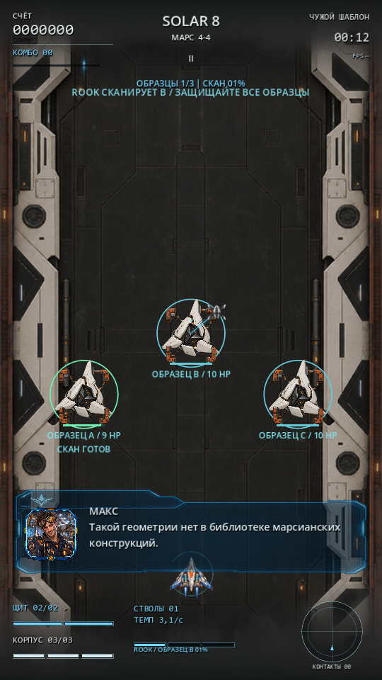
4-5 · Мегасборщик
Три фазы: уничтожение четырёх инструментов и дронов; отключение двух ремонтных модулей; сканирование и уничтожение чужого ядра. Разрушенный инструмент останавливается и отменяет подготовленный удар. Третья фаза недоступна, пока жив хотя бы один ремонтный модуль.
Текущая настройка: инструменты — по 16 HP, ремонтные модули — по 12 HP, броня — 60 HP, ядро — 42 HP. Модуль возвращает 3 HP брони каждые 2 секунды. В третьей фазе Макс сканирует ядро через сенсорный канал ROOK 5 секунд; до завершения скана ядро защищено от огня.
Три звезды в текущей игре
- Просканировать и уничтожить ядро
- Не допустить восстановления брони
- Без урона корпусу
Звёзды выдаются только при победе. Числа HP, таймеры и дополнительные условия — текущая настройка для согласования, а не утверждённый числовой канон.
Чистый фрагмент SOLAR, обрыв связи и трасса к Юпитеру. Текущая игра возвращает в меню: миссии Jupiter и эффект новых турбин ещё не реализованы. Предлагаемая ангарная сцена не включена автоматически.
Сцены и реплики → · Подробная записка реализации

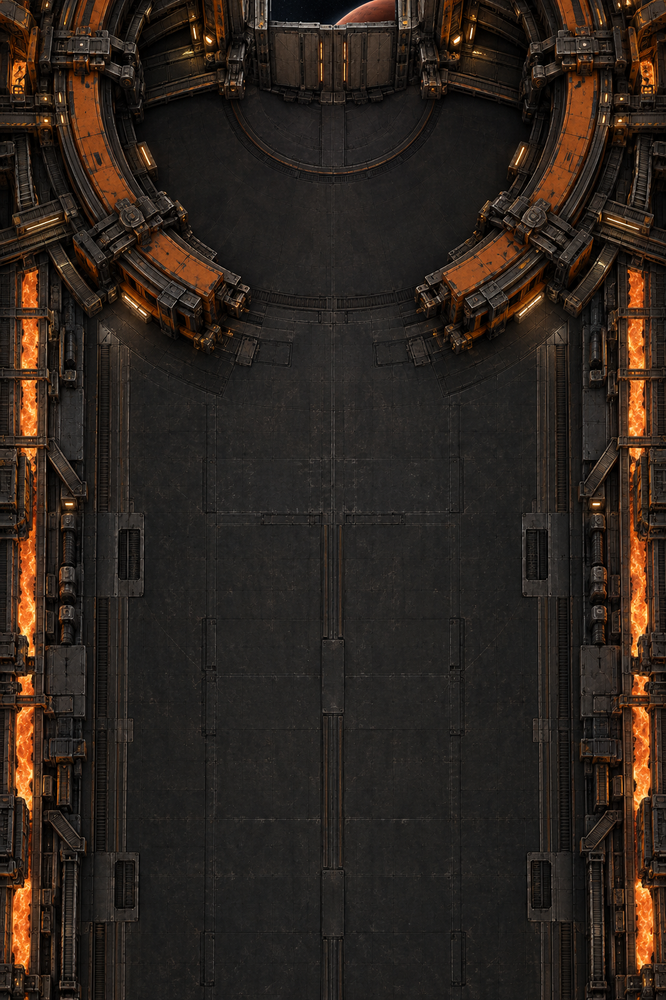
Оригинал PNG · Версия в игре

Кадры автоматических проверок
Это кадры тестов, не запись обычного прохождения. Таймеры и реплики могли переключаться тестом.

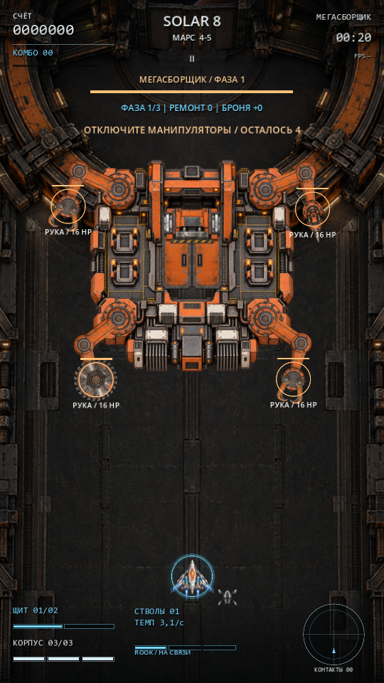

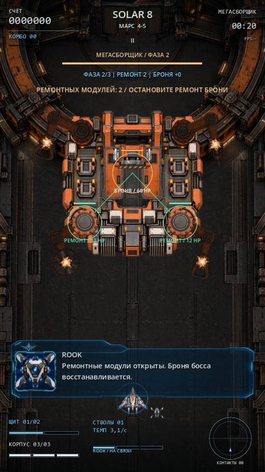

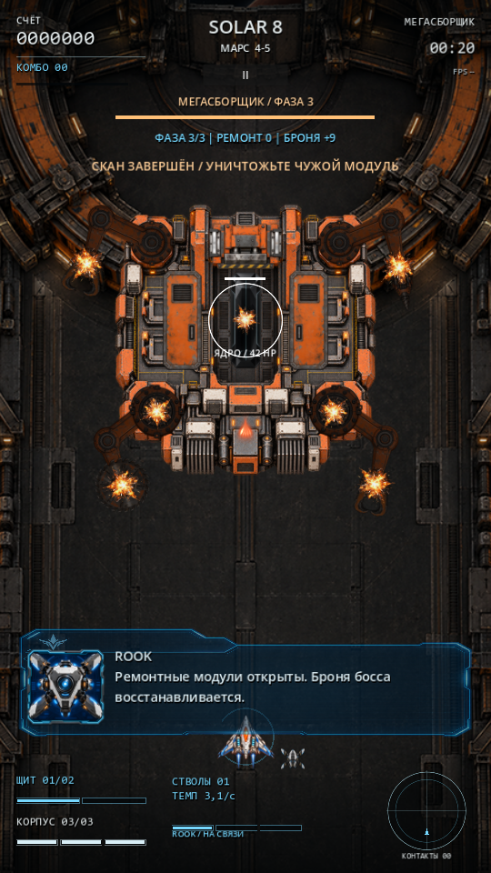

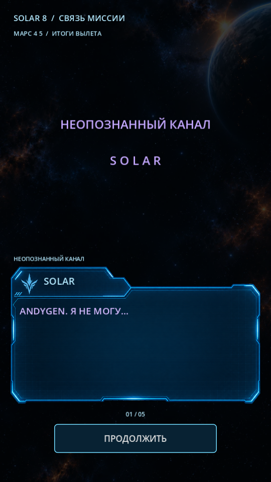
Assembler Prime: подвижная сборка v1
Десять отдельных деталей, четыре манипулятора, раскрывающиеся захваты и центральный отсек. В пакете от 29.09 подтверждён перенос в Sprite2D для 4-5; более ранний manifest исходной сборки ещё помечен как прототип. Старые цельные фазы сохраняются отдельно.
Просмотр показывает геометрию и движение, а не игровые столкновения или баланс. Пивоты считаются в координатах оригинальных PNG; уменьшенные игровые копии рисуются с компенсацией масштаба.
Модель загружается по кнопке
Цельные фазы и прежние детали · Исходная демонстрация · Пивоты JSON · Документация сборки


Общий источник реплик и исходники
74 реплики Mars: 12 существующих сохранены, 62 добавлены по постоянным ID. 48 новых сюжетных строк связаны со сценарием; 14 новых строк инструктажа остаются игровыми адаптациями. NOVA добавлена в список говорящих.
Открыть общий каталог RU / EN · Актуальный мастер JSON
Файлы внутри пакета — снимок передачи, а не второй редактируемый каталог. Игра должна получать дальнейшие редакторские изменения из общего assets/dialogues.json.
README пакета · Манифест ресурсов · Контрольные суммы · Связи с игровыми файлами